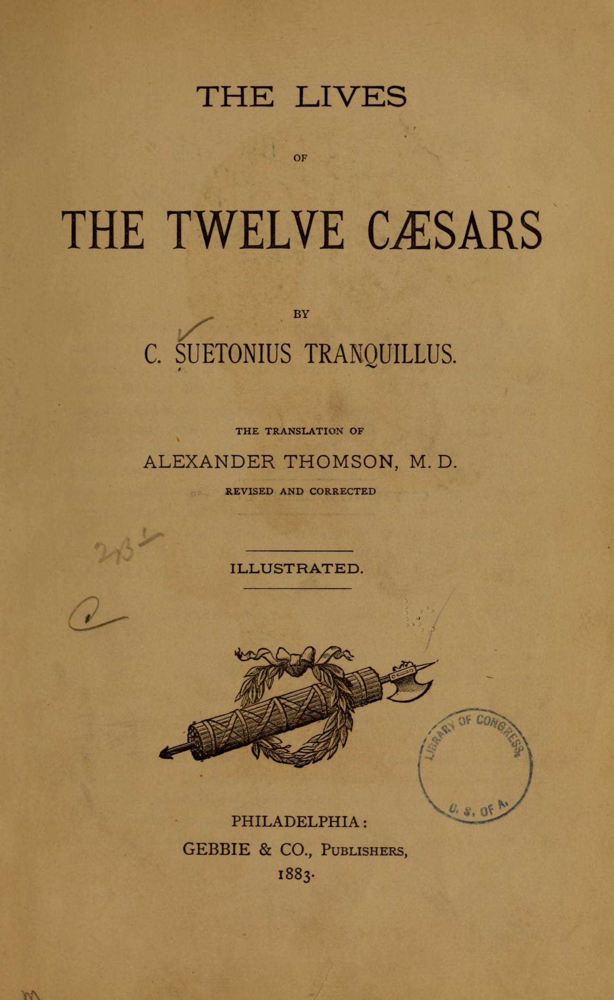

ANCIENT ROME · ORIGINAL LATIN · READ ONLY
De vita Caesarum

The original Latin is read-only. All twelve original biographies, from Julius Caesar through Domitian. The full surviving Latin text is hosted inside this library. For narration, return to our English-language reader. This is not a separate catalog book; it is the original-language companion to the English translation.
Preparing the original Latin text…
The full surviving ancient text will appear here from our locally hosted archive.
Page 1